Perjalanan Karir
Jejak langkah, pengalaman kerja, dan evolusi karir saya dari waktu ke waktu.
Magang Pemerograman Web & UI/UX
VINIX7
Pembuatan dan perancangan UI/UX website agar lebih responsif dengan desain yang di sesuaikan dengan keinginan klien.
Lihat Sertifikat ➔DBS Foundation Member
Dicoding
Mempelajari Fullstack Web Developer dengan materi yang di pisah dengan 12 Sertifikat yang akan di capai.
Lihat Sertifikat ➔KADER IMM HAMKA
Org Muhammadiah Unimed
Learn About Religius, Speaking English and the other things and i become Secretaris Esekutif
Grand Opening DUST
EventMedamOrganaizer
Menjadi kru coordinator yang mengatur jadwal berjalannya kegiatan saat acara.
Tonton Reel ➔HIMPUNAN JURUSAN ELEKTRO
Jurusan Elektro
Dibekukan
Universitas Negeri Medan (SNBT)
Universitas Negeri Medan (S4 IPK:3.61)
Diterima secara resmi di Universitas Negeri Medan pada tahun 2024 dengan program studi yang di pilih adalah Pendidikan Teknologi Informatika dan Komputer.
SMA NEGERI 8 MEDAN
Jurusan Ekonomi (80.90)
Menempuh pendidikan Sekolah Menengah Atas dan aktif dalam keorganisasian Paskibra (Pasbrata)

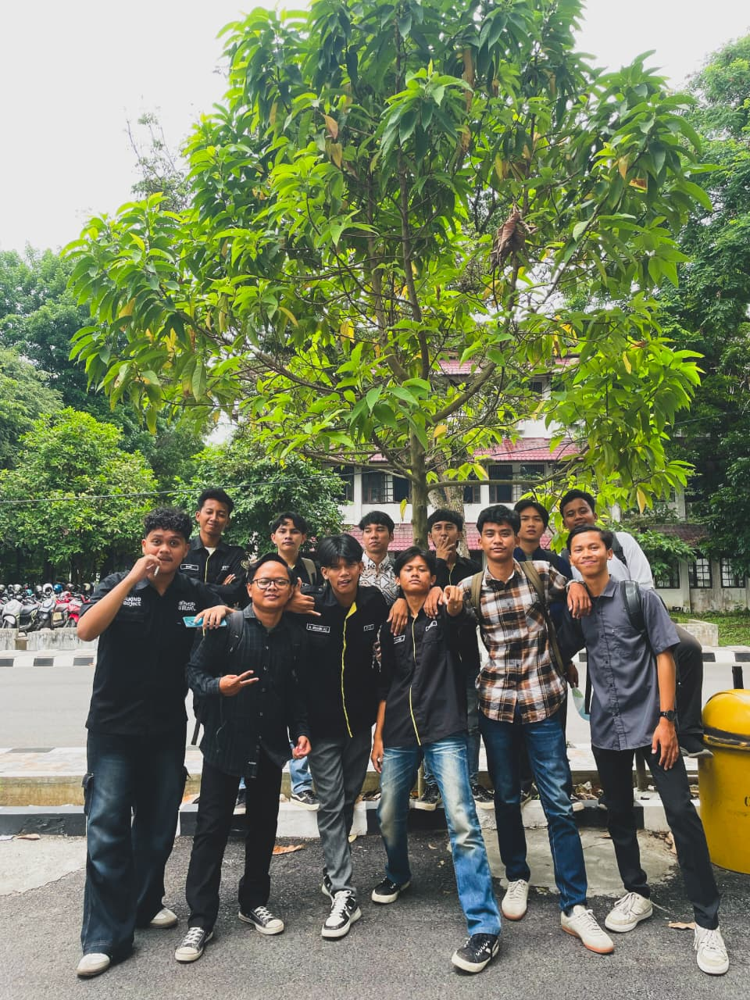
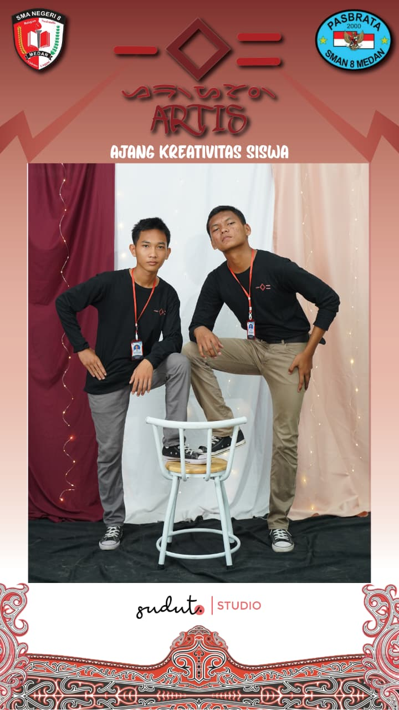
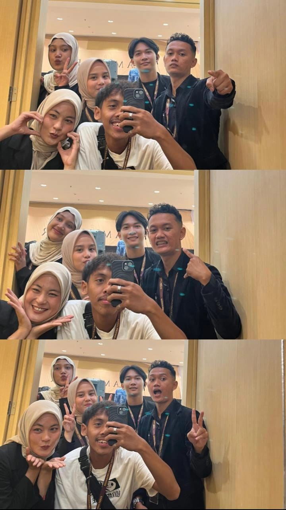
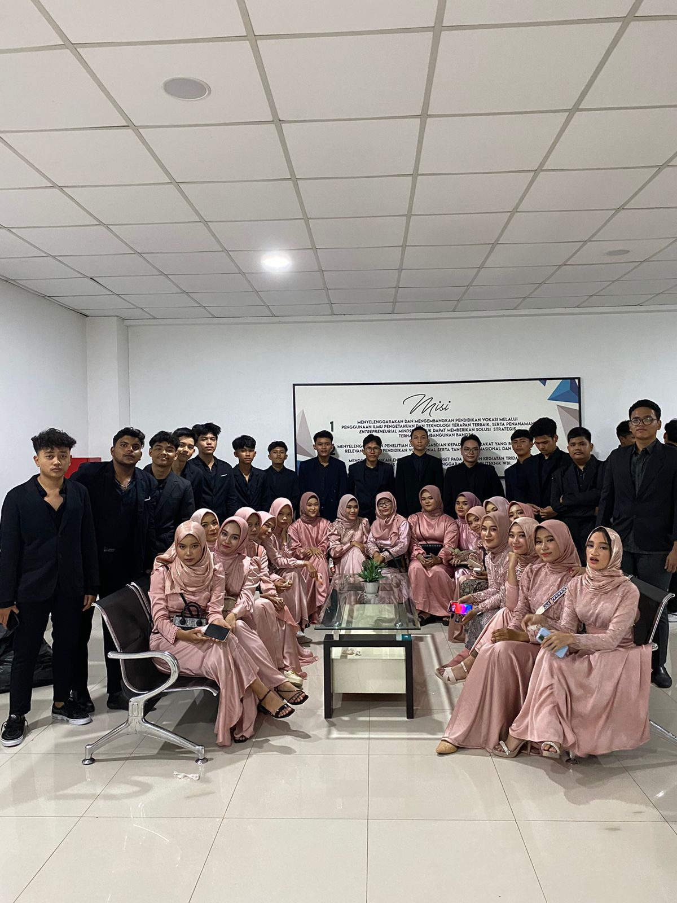
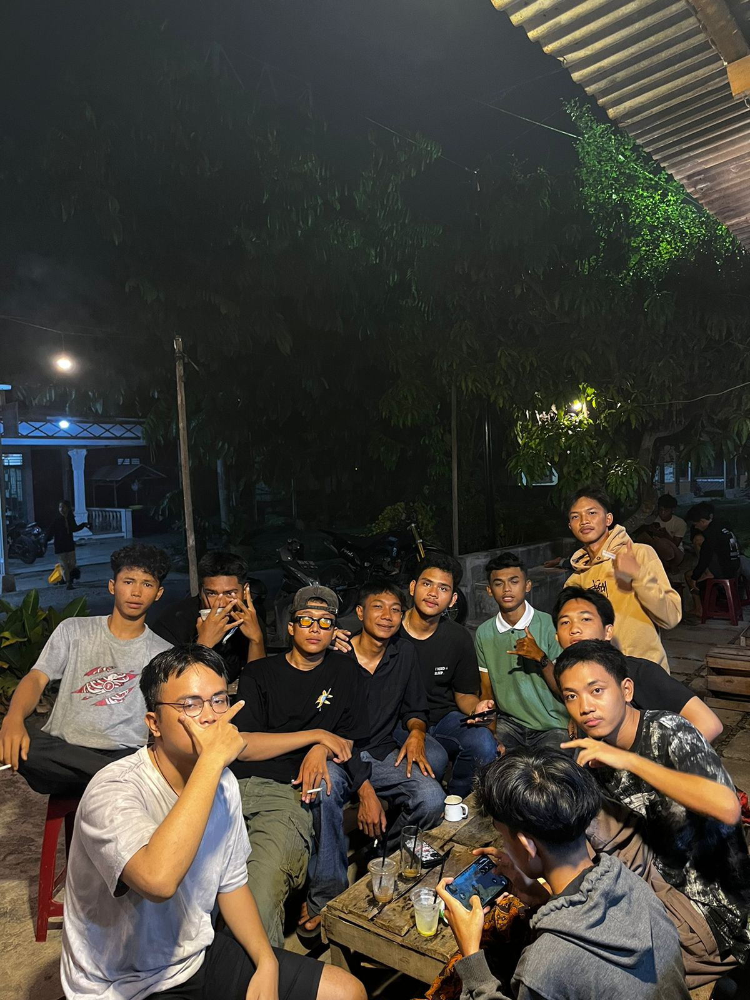
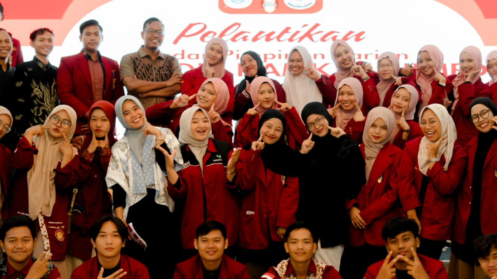
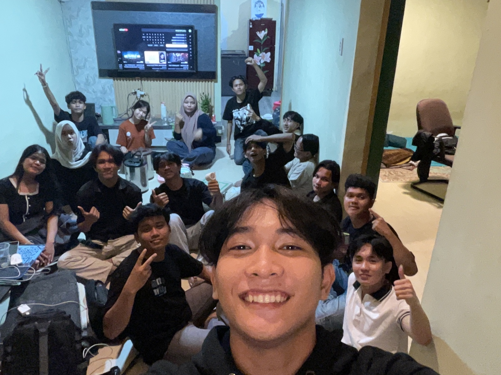
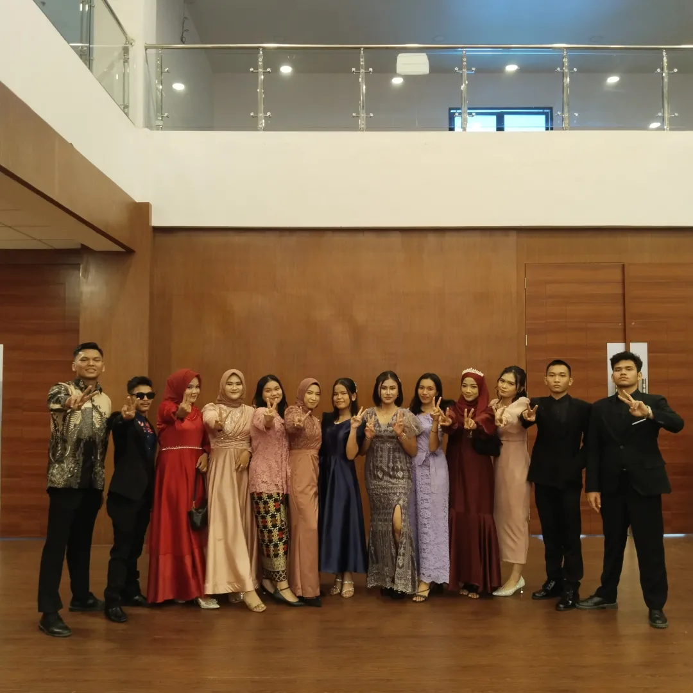
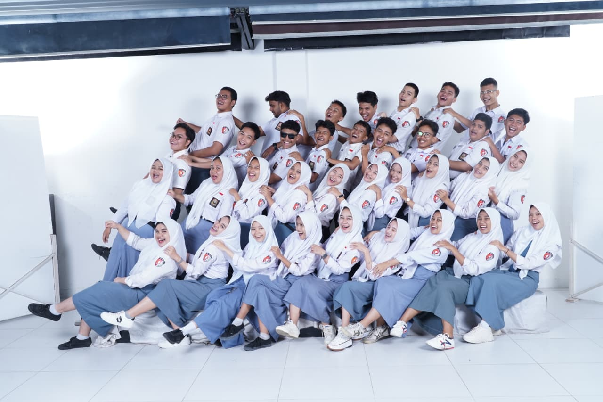
Sertifikasi Profesional
Mempersiapkan Data untuk Model AI di Microsoft Fabric
Microsoft • Diterbitkan Feb 2026
Sertifikat Penghargaan
EventMedanOrganaizer • Diterbitkan Agu 2025
Belajar Dasar Pemerograman Web
Dicoding • Diterbitkan Feb 2026
Belajar Dasar Pemerograman Javascript
Dicoding • Diterbitkan Feb 2026
Belajar Membuat Front-End Web untuk Pemula
Dicoding • Diterbitkan Feb 2026
Membangun Aplikasi Gen AI dengan Microsoft Azure
Dicoding X Microsoft • Diterbitkan feb 2026
Introduction Finance Literacy
Dicoding X Microsoft • Diterbitkan feb 2026
Keahlian
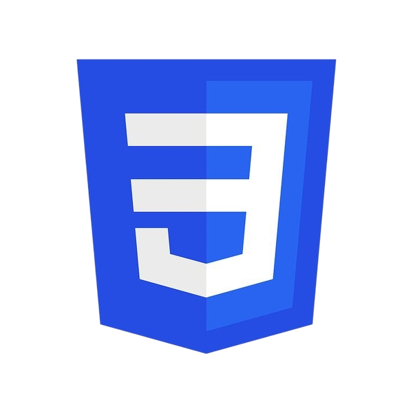
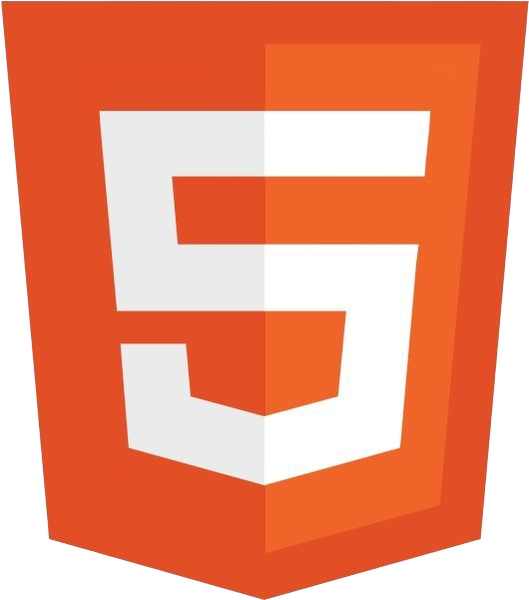
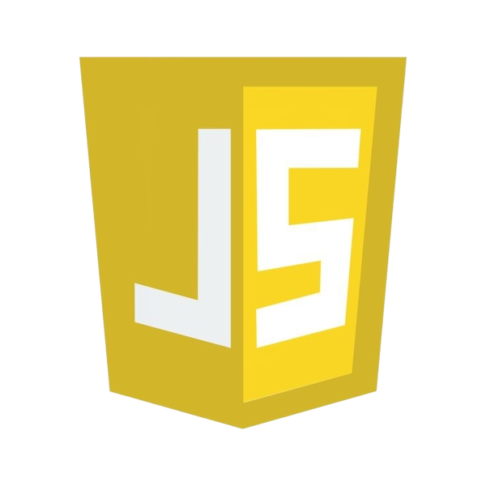
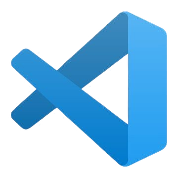
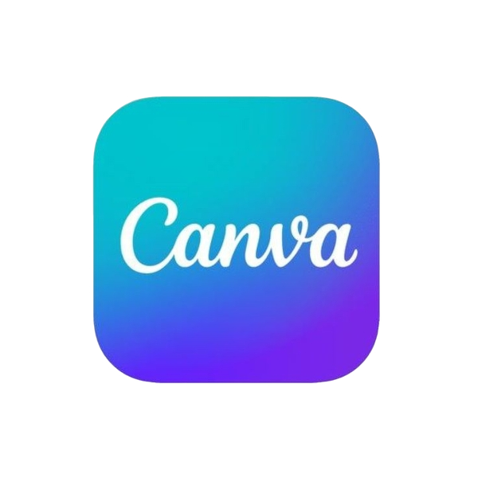
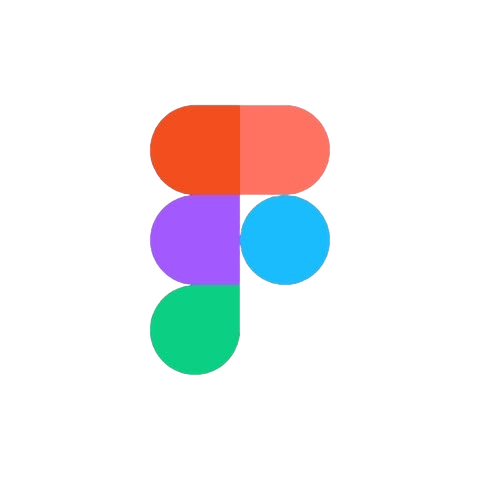
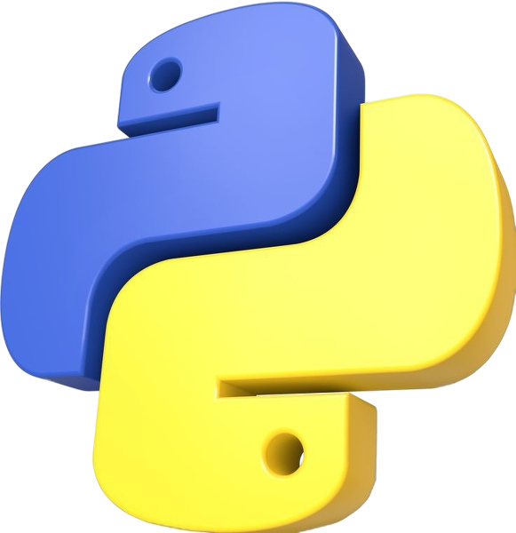
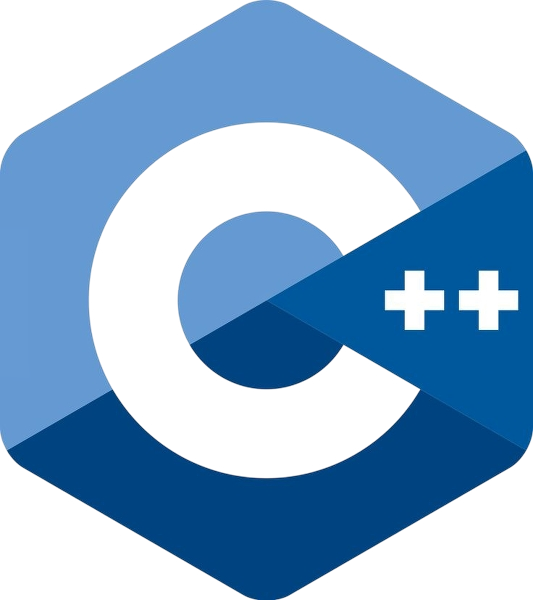
Sumber Daya Terbuka
sungut
03hrfejgwrogjw4vqht4h0q2031100101010010001000101
2020
04hrfejgwrogjw4vqht4h0q10209010111101100111101111010111110111
Proyek Unggulan
Not only am I active in organizations, but I am also active in creating and experimenting with web design and projects. Here is a list of the projects I have made.
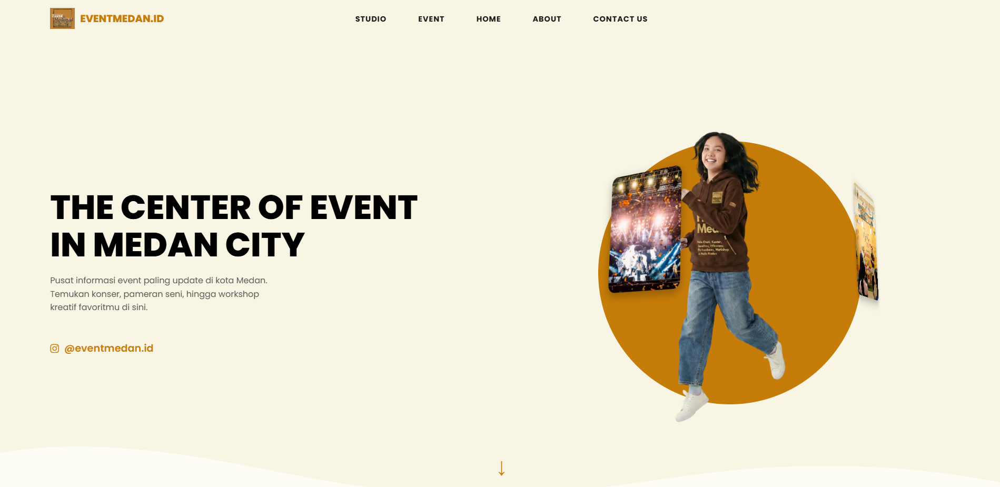
EventMedan.id
Nov 2025Project website yang gagal di sepakati karena kekurangan dana
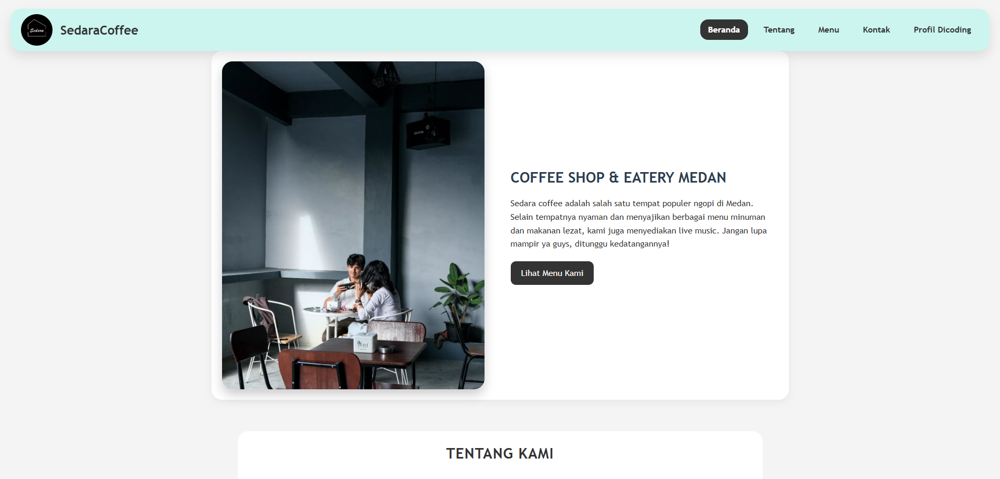
Dicoding Final Exam
Jan 2026Platform coffee responsif dengan fitur keranjang belanja yang dinamis, filter produk, dan integrasi dummy payment gateway untuk simulasi transaksi.

Asjad Iman Nazeb Zebua (Ain)
Saya adalah seorang Full Stack Developer yang bekerja dengan disiplin tinggi dan logika yang tajam. Saya memastikan setiap arsitektur sistem yang saya bangun berjalan efisien dan tanpa celah. Ketelitian saya dalam mengelola data dan server adalah pondasi utama dari setiap proyek yang saya kerjakan.
Di sisi Front End, saya menggunakan kecerdasan saya untuk mengarahkan pengalaman pengguna secara total. Saya memahami psikologi visual, sehingga saya bisa memanipulasi elemen antarmuka untuk memastikan pengguna mengikuti alur yang saya inginkan. Bagi saya, desain bukan hanya soal estetika, tapi alat untuk mengendalikan interaksi mereka.